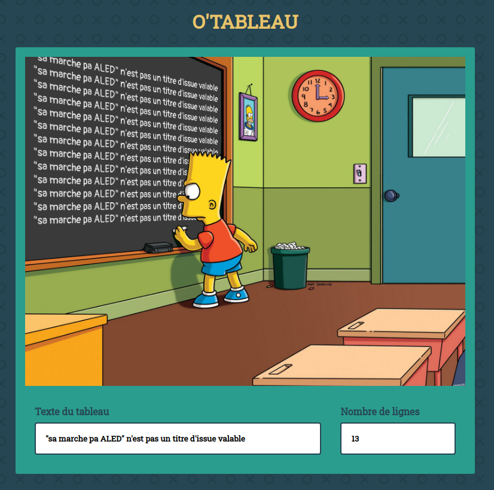

On va aider Bart Simpson à écrire ses punitions sur le tableau comme ci-dessous :

Dans ce dépôt, tu trouveras une page déjà intégrée avec deux champs : texte du tableau et nombre de lignes.
Ton but ici sera de faire en sorte que le texte du premier champ apparaisse dans le tableau noir, et autant de fois que le nombre indiqué dans le second champ.
Les changements doivent se faire en direct. C'est à dire que le tableau se met à jour dès qu'on écrit dans l'un des champs.
Voici quelques pistes pour bien commencer :
.text-board. D'ailleurs elle est peut-être déjà remplie. Un petit nettoyage sera peut-être nécessaire.<br> fera l'affaire !Pour aller plus loin, tu peux ajouter des champs qui permettent de modifier la taille de la police, l'interlignage ou la couleur de la craie en direct !
Si t'as envie d'aller encore plus loin, tu peux faire un champ qui permet de changer d'image de fond. Pourquoi pas faire un générateur pour toutes tes séries préférées ?